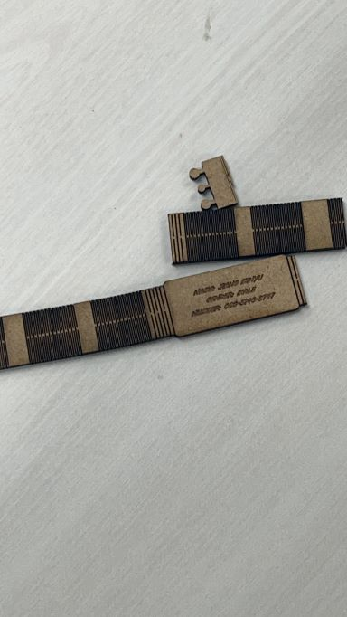
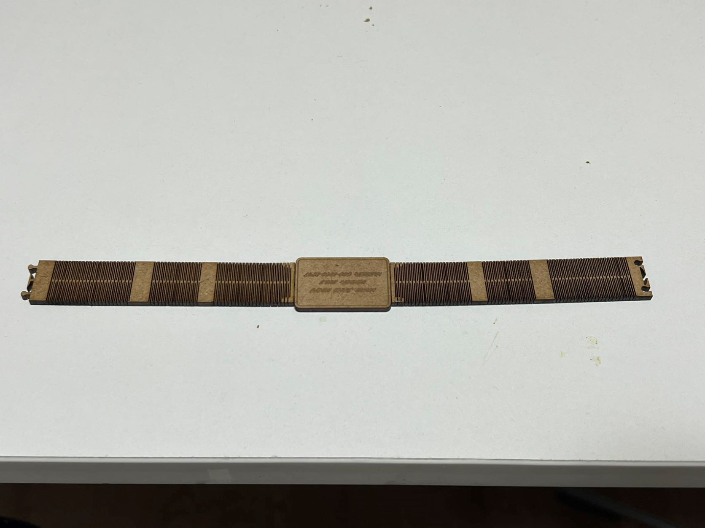

腕時計
今回の課題はすごく自由だが、テーマがなくてとても悩んでいた。僕はYouTubeでLIVING HINGESを検索して、
曲がれるの基本構造を真似して、時計を作りました。
LIVING HINGES
v1.0

しかし、曲がる部分が少ないから、脆いし、曲がる時は折れました。だから、バージョン２を作りました。
v2.0

バージョン2は長くしました、曲がれる部分も多めにしました。
LIVING HINGESの基本構造です
設計ファイル：
腕時計